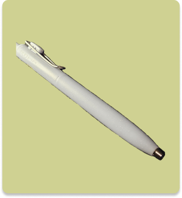
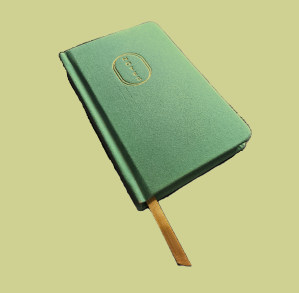
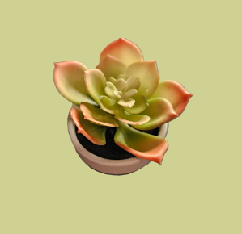
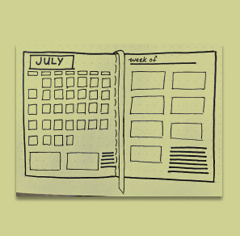
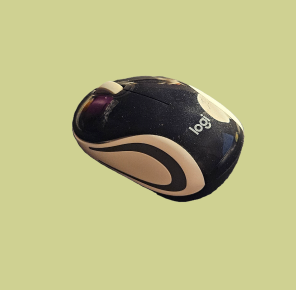

User-Centered Writing
I empathize with the user’s problem and write a solution that fits the user’s needs and goals.

UX
Research
I craft surveys that collect accurate data and help my team develop a full understanding of the typical user population.

Qualitative Interviews
I write questions that get to the heart of the problem. I listen to the user and take notes so that I can ask better follow-up questions.

Paper & Pencil
My most favorite and basic tool. By using paper and pencil, I visualize my ideas and leave room for error.

Figma
The second-best tool available to a UX designer. Figma allows me to bring my sketches to life.

Google Drive
I live to stay organized and Google Drive is simply one of the best tools to do just that.